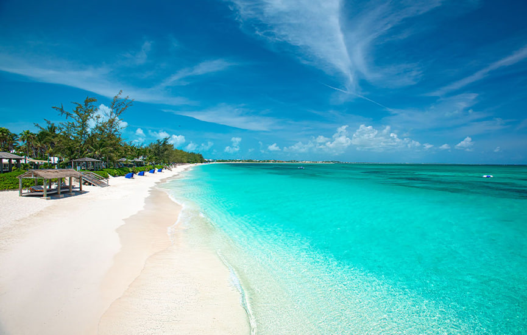
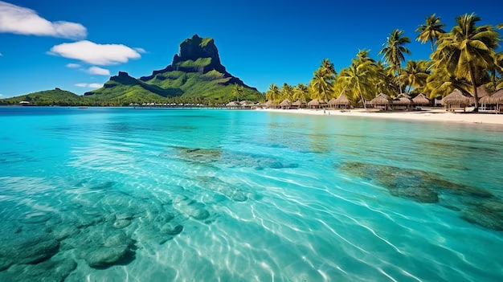
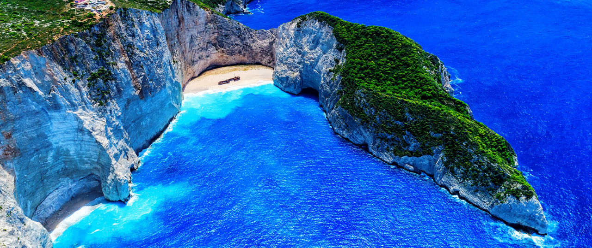
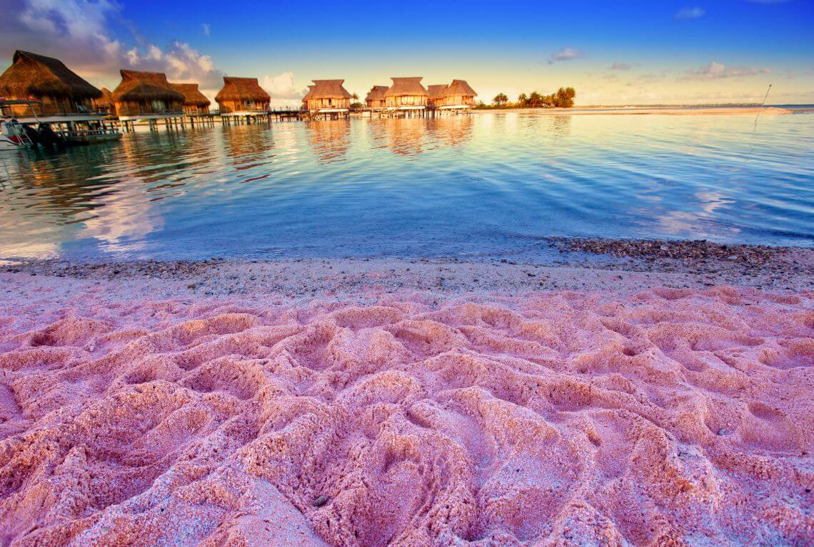
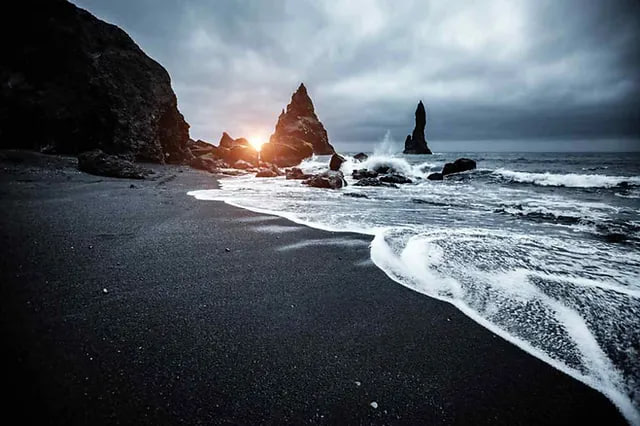
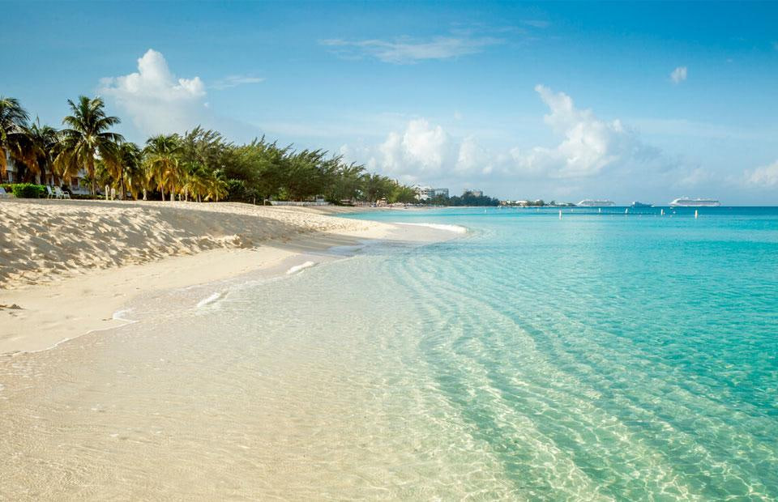
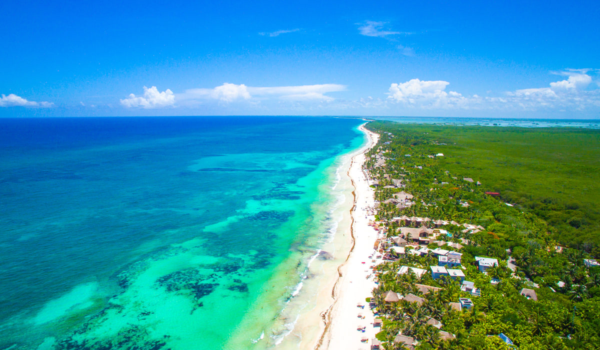
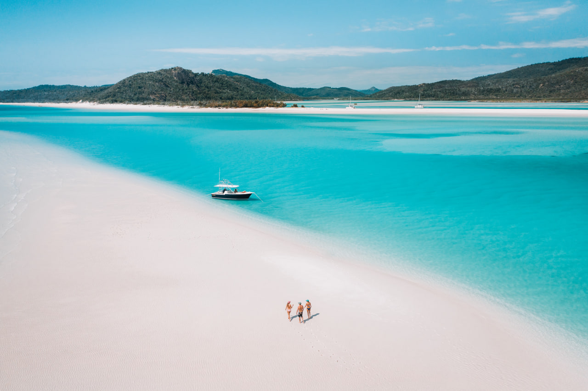

Anse Source d'Argent
Located in Seychelles.
This beach is known for its beautiful rocks and clear water...

Baía do Sancho
Located in Brazil.
This beach offers stunning views and pristine nature...

Grace Bay
Located in the Turks and Caicos Islands.
Grace Bay is famous for its white sand and clear waters...

Matira Beach
Located in Bora Bora.
It offers stunning sunsets and crystal clear waters...

Navagio Beach
Also known as Shipwreck Beach, is located in Zakynthos, Greece.
It is famous for its crystal-clear waters and an old shipwreck lying on its shore...

Pink Sands Beach
Located in the Bahamas.
This beach gets its name from the unique pink color of its sand, which is created by tiny coral particles...

Reynisjfara Beach
Located in Iceland.
It is known for its stunning basalt columns and powerful waves, making it a must-see destination for nature lovers...

Seven Mile Beach
Located in Grand Cayman.
This beach is famous for its long stretch of soft sand and clear, turquoise waters...

Tulum Beach
Located in Mexico.
It combines the beauty of white sandy shores with ancient Mayan ruins overlooking the ocean...

Whitehaven Beach
Located in Australia.
It is known for its bright white silica sand and crystal-clear waters and it's one of the most photographed beaches in the world!..